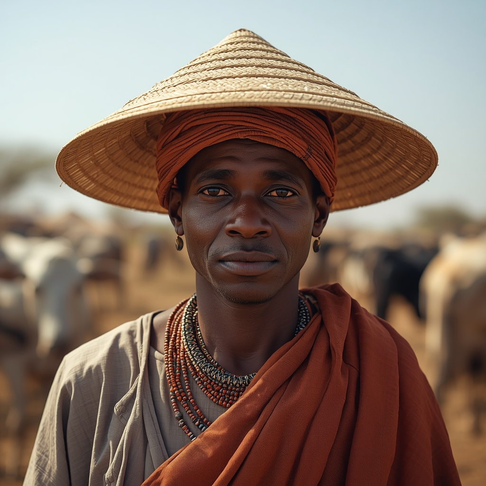

🧑🤝🧑 世界の民族・人びと
People of the World。国境を越えて暮らす人びとを、地域ごとに紹介します。伝統だけでなく、今の暮らしも一緒に。

フラニ(フルベ)
Fulani / Fulɓe
アフリカ
🗣 使用言語
フラ語(フルフルデ語/プラール語)
👥 人口の目安
約2,500万〜4,000万人(西アフリカ・サヘル地域一帯)
👘 伝統衣装
遊牧民ウォダベは特徴的な帽子とターバンを重ねて身につけるなど、地域や生活様式(遊牧・半定住・定住)によって装いが異なる。
🏠 住居
遊牧民は移動式の簡素な住居を用いる一方、定住したフラニの人々は土造りの家屋に住むなど、生活形態に応じて多様な住居形態を持つ。
🍲 食文化
牛・ヤギ・羊などの家畜を飼う牧畜民として知られ、乳製品を中心とした食生活を古くから営んできた。
🎵 音楽・踊り
牧畜生活に根ざした歌や詩の伝統があり、家畜とともに移動しながら歌い継がれる牧歌が知られる。
🎉 行事・祭り
若い男性が着飾って求婚のための踊りを披露する「ゲレウォル」など、婚礼に関わる儀礼的な祭りがある。
🙏 信仰・価値観
大多数がイスラム教を信仰し、少数がキリスト教や伝統信仰を保持している。
📜 歴史
紀元前7世紀頃にサハラ地域から移動を始めたとされ、後にソコト・カリフ国やマシナ帝国など西アフリカの主要なイスラム国家を築いた。
🏙 現代の暮らし
世界最大級の遊牧牧畜民集団として知られ、忍耐・慎み・もてなしなどを重んじる行動規範「プラーク」を今も大切にしている。
🇯🇵 日本との関係
直接的な交流の記録は多くないが、西アフリカを代表する牧畜文化として旅行記やドキュメンタリー番組を通じて日本でも紹介されることがある。
🌍 関連する国


出典: https://en.wikipedia.org/wiki/Fula_people(2026-09-01時点) / https://www.britannica.com/topic/Fulani(2026-09-01時点)